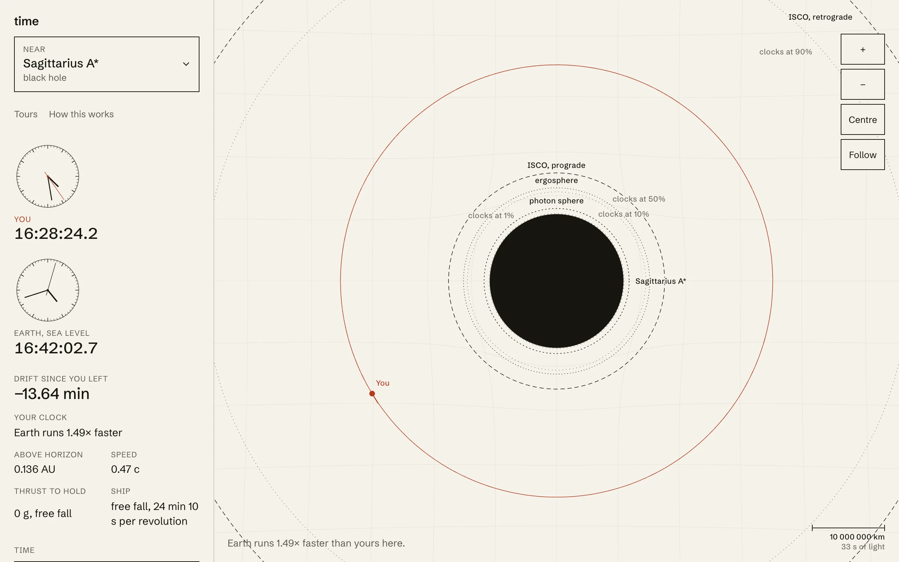

There are two clocks on the page. One is a clock at sea level on Earth and shows your actual local time. The other left Earth in sync with it when the page loaded and is now on a ship around whichever body you picked. The number in between is how far they have drifted apart. I already have a game on this site with a time dilation mechanic. This one is not a game. Every number on the page comes from general relativity or from a cited measurement, and the page never claims a number the code did not compute.
Geodesics near compact bodies
Around black holes, neutron stars, magnetars and white dwarfs the ship follows exact equatorial geodesics of the Kerr metric in Boyer-Lindquist coordinates, with Schwarzschild as the zero-spin case. I work in units where \(G = c = M = 1\), so \(r\) is in gravitational radii. In the equatorial plane the metric components are
\[ g_{tt} = -\left(1 - \frac{2}{r}\right), \quad g_{t\phi} = -\frac{2a}{r}, \quad g_{\phi\phi} = r^2 + a^2 + \frac{2a^2}{r}, \quad g_{rr} = \frac{r^2}{r^2 - 2r + a^2}. \]Energy and angular momentum per unit mass are conserved, so \(dt/d\tau\) and \(d\phi/d\tau\) come straight from them at each radius and the only thing to integrate is \(r\). I use RK4 in proper time with a step that is the smallest of a few limits: at most 0.02 radians of \(\phi\), at most 0.2 percent of \(r\), and at most 5 percent of the gap between \(r\) and the horizon. The last one is what keeps a plunge from stepping through the horizon in one go. The four-velocity norm stays within 1e-6 of \(-1\) after 500 gravitational time units on a circular orbit at spin 0.9, a circular orbit stays circular to six decimal places, and a body dropped from rest at \(r = 10\) reaches the horizon in the textbook proper time to within half a percent. As a sanity check against the real world, the integrator recovers Mercury's perihelion advance to within 5 percent of \(6\pi GM / (a(1-e^2)c^2)\), which is the 43 arcseconds per century.
A kick changes the ship's velocity by a chosen amount, applied prograde, retrograde, outward or inward. The question is: as measured by whom? I apply it in the frame of the zero angular momentum observer at the ship's radius, the observer who is dragged around with spacetime but has no angular momentum of their own. That is the only frame that still makes sense inside the ergosphere, where nothing can hold still. The velocity is converted from that frame to a four-velocity, the kick added, the speed capped at 0.999 c, and the constants of motion rebuilt. Holding station puts the ship at rest in the same frame, so inside the ergosphere of a spinning hole it holds its radius while dragged space sweeps it around. The panel shows the thrust that takes, in g, and it grows without bound at the horizon.
The Kerr formulas for the innermost stable orbit and the photon orbit are from Bardeen, Press and Teukolsky 1972. The tests check them at spin 0, 0.9 and 1, where the prograde ISCO comes in from 6 to 2.3209 to 1 gravitational radii and the retrograde one goes out to 9. The hover acceleration in Kerr is only tested at zero spin, where it has to match the Schwarzschild formula; at nonzero spin the derivative of the lapse is unchecked.
Newton for the neighbourhood
Around the Sun, the planets and the Moon the ship moves under Newtonian gravity from the central body and its companions, which follow their real Kepler ellipses from published elements and sit where they are today. Its clock runs at the first-order rate: one minus the summed potentials over \(c^2\), times \(\sqrt{1 - v^2/c^2}\). The terms I drop are second order in the potential, around a part in \(10^{16}\) at Earth's distance from the Sun, and the drift readouts here are microseconds a day, so first order is plenty. The reference on Earth is not free either. In Earth scenes coordinate time is geocentric and Earth's clock runs slow by \(L_G = 6.969290134 \times 10^{-10}\). Everywhere else it carries its full share of the solar potential, \(L_B = 1.550519768 \times 10^{-8}\). Both are IAU defining constants. From them and the GPS orbit the site gets the number GPS engineers correct for: 45.7 microseconds a day gained from altitude, 7.2 lost to speed, 38.6 net.
The Newtonian regime has a hole I should be plain about. You can kick the ship to 0.999 c around the Sun and it will obey Newton's laws with only the special relativistic factor on its clock. Nothing in that regime knows about relativistic dynamics, so a fast flight around a planet is a wrong picture, cleanly computed. A scene is also only right out to the Hill sphere of the last body it pulls with, about 1.5 million km for the Earth and Moon scenes. Beyond that the Sun would take over and nothing stands in for it, so the page says so.
An honest speed dial
Time can be sped up in steps from real time to a year per second. The problem is that tight orbits need small steps: a geodesic orbit takes about 320 integrator steps and a Newtonian one about 3,142, and a frame can afford roughly 20,000. So for the orbit the ship is on right now, I compute the fastest warp the integrator can honour at 60 frames a second and hide anything faster. Then, separately, a meter records how many simulated seconds each real frame actually advanced, over the last 12 frames, ignoring any frame longer than 0.25 s as a stall. If the achieved rate trails the setting by more than 5 percent, the page shows the achieved number instead of the setting. Kick into a tighter orbit and the dial pulls itself down after a moment. I would rather the UI say 410 when it is doing 410 than say 600 and lie.
The plate the scene is drawn on is stretched by the metric: radial spacing follows proper distance from the horizon, so the isochrone rings crowd toward it. Distances are to scale, zoom is logarithmic, and a scale bar with its light travel time is always on screen. Every mass, radius, spin, and orbital element in the body picker cites a source, and the list of sources is on the how page. The catalogue uses a solar GM of 1.32712440018e20 for converting solar masses and labels it the IAU 2015 nominal value, while the physics constants use the nominal 1.3271244e20. The two differ in the ninth digit, well below anything the page displays, but they should not both exist.